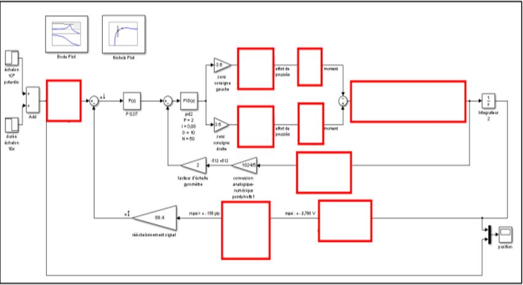
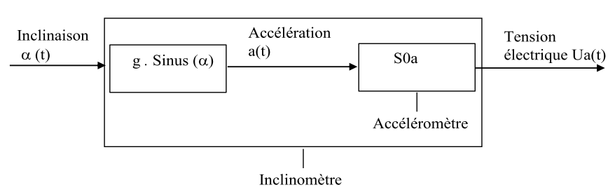
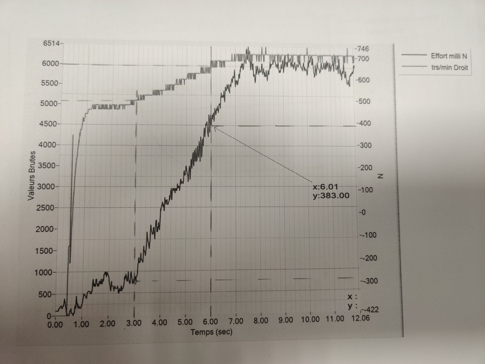

Drone D2C
Sommaire
Prise en main
élaboration du schéma bloc fonctionnel
étude expériemntale
modélisation du comportement et analyse des performances
Synthèse
Prise en main
Diagramme de chaîne fonctionnelle
Faire le diagramme
Les capteurs présents
- Accéléromètre
- Gyroscope
- Capteur de prximité IR
- Jauge de déformation
- Potentiomètre de commande
élaboration du schéma bloc fonctionnel
Schéma bloc fonctionnel simplifié
Faire le schéma
Schéma bloc fonctionnel complet
étude expériemntale
Analyse des performances
Analyse de l'influence des perturbations
modélisation du comportement et analyse des performances
Partie I
Modélisation bloc par bloc
Capteur d'angle de tangage - Inclinomètre
On a :
Avec S0a = 0,42 V/
Capteur gyromètre
On trouve dans le dossier ressource un gain de 0,67 V/°/s
Moteurs
Pour une entrée en rampe
On déduit K=(400-300)/(6000-5050)=0,105
Hélices
On teste avec la jauge d'effort
Balancier
Il nous est donné :

Où :
- Fd et Fg sont les forces générées par les hélices gauche et droite ;
- b est le bras de levier pour exprimer le moment des forces Fg et Fd calculé au point O ;
- J est appelé « moment d’inertie » du corps du drone didactique ;
- α est l'angle de tangage du corps du drone didactique
- Cf est un « couple de frottement » qui peut intervenir au point O de l’axe d’articulation pour freiner le mouvement de tangage; On propose dans la suite de négliger le couple de frottement : Cf=0 .
Balancier
Données : b=0,14m J=0.01kg.m²
On déduit donc lorsque les forces sont égales